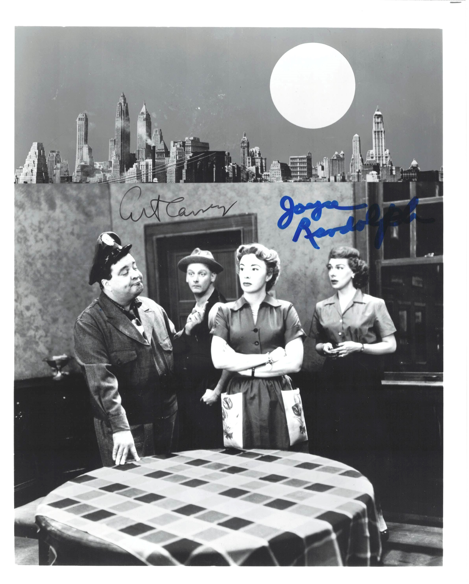

Product No. HEA-0300
$250
Shipping: $8.95
Description
Signed 8x10 B&W photograph as the Nortons. Not inscribed
Full Description
The Honeymooners The Honeymooners was an American television sitcom centered on the everyday lives of working-class couples in Brooklyn, New York. The series starred Jackie Gleason as loud, ambitious bus driver Ralph Kramden and Audrey Meadows as his sharp-witted wife, Alice. Art Carney played Ralph’s best friend and upstairs neighbor, sewer worker Ed Norton, while Joyce Randolph portrayed Ed’s wife, Trixie. The characters first appeared in comedy sketches on Jackie Gleason’s variety programs before The Honeymooners became a weekly half-hour series in 1955. The original series produced 39 episodes during the 1955–1956 season, later becoming famous as the “Classic 39.” Many episodes revolved around Ralph’s get-rich-quick schemes, arguments with Alice, and adventures with Norton. Despite frequent quarrels, the stories generally emphasized the affection and loyalty between the characters. Although its original network run was brief, The Honeymooners became one of television’s most influential sitcoms through decades of reruns. Its characters, catchphrases, and working-class setting influenced numerous later television comedies, including The Flintstones. The series remains regarded as a classic of early American television comedy.
Condition
Excellent condition